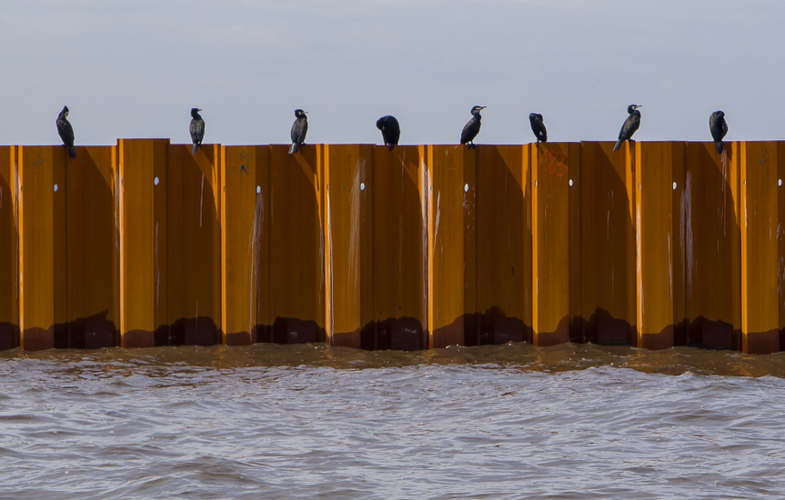
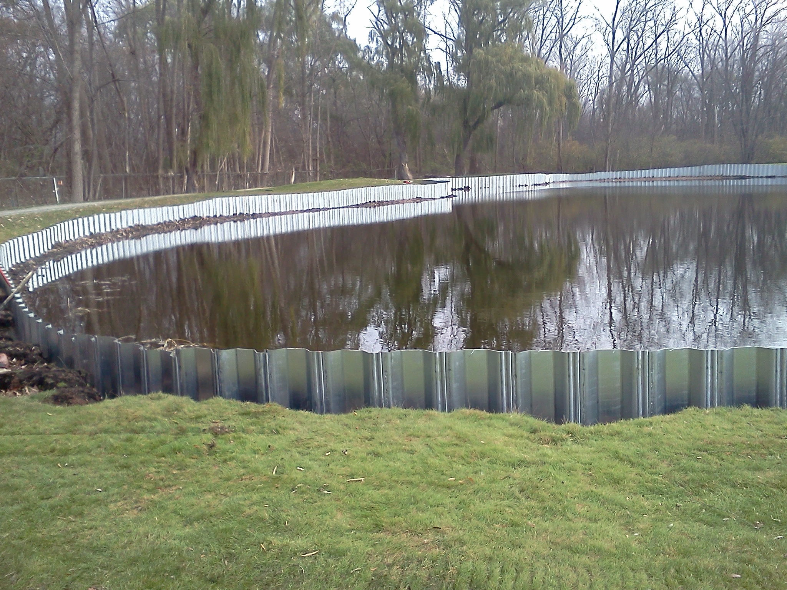
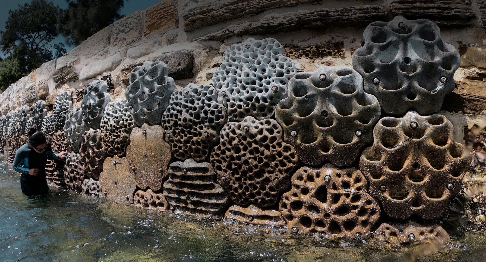

Sea walls can be placed deeper in the water to effectively break waves and stop contaminants from reaching the shoreline.
This specific wall can be very disruptive to the ecosystem, however this is very effective at stopping debre.
Additionally some animals, such as the birds as shown, can use these to their advantage.

Inland Sea Walls
Sea Walls don't have to be incoporated on a coast line.
Walls such as the ones shown in the image, can be used to help block floodwater from moving farther into land.
Additionally, they can act as a primary barrier separating the water from the soil for special use cases.

Living Sea Walls
Modern day sea walls along the coast are sometimes developed with the intention of allowing animals and sea creatures to use them in part of their habitat.
These designs may include textured surfaces, ledges, crevices, and objects that provide shelter and support marine life while still offering coastal protection.

Aged Sea Walls
Many sea walls in the Tampa Bay have been aged and worn down by erosion and constant contact with the nature.
These sea walls must be replaced in order to maintain their effectiveness and ensure they do not increase the damage in the environment.